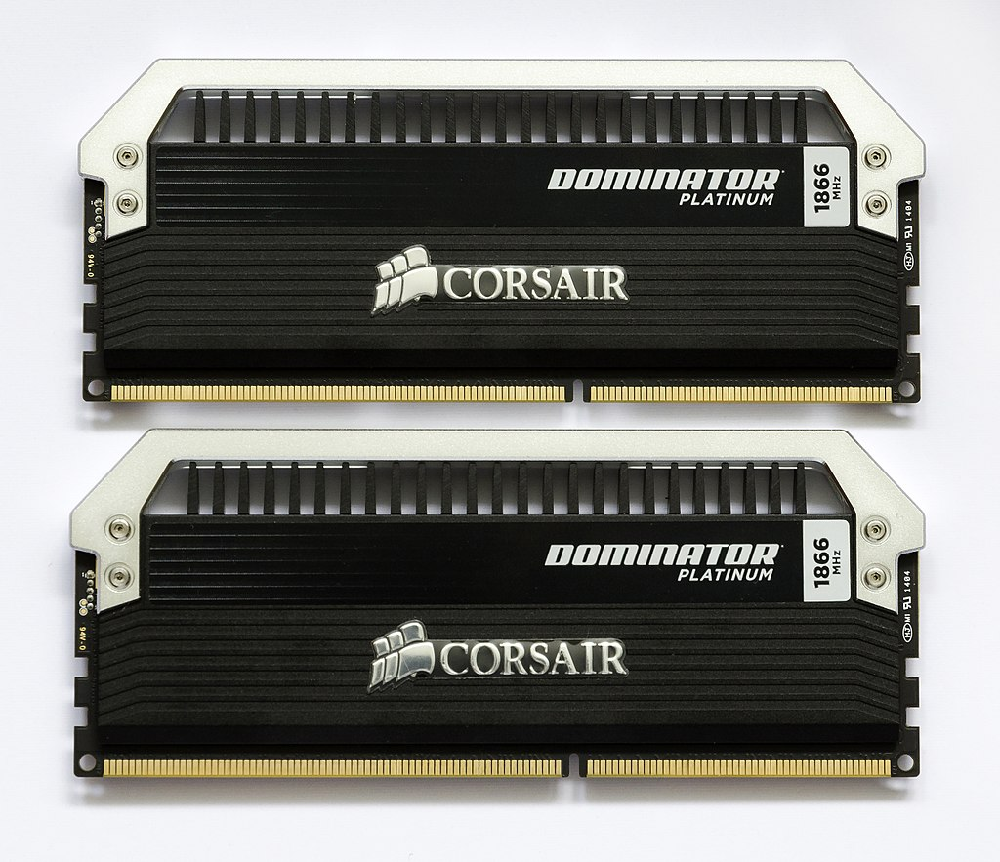

RAM
Co to w ogóle jest ? RAM (ang. random-access memory, main memory) to podstawowy rodzaj pamięci komputerowej. Ogólnie termin RAM odnosi się do pamięci głównej w większości komputerów, a dokładniej do pamięci półprzewodnikowych SRAM i
DRAM.
Do czego służy ? W pamięci RAM przechowywane są aktualnie wykonywane programy i dane dla tych programów oraz wyniki ich pracy. W temperaturze pokojowej zawartość większości pamięci RAM jest tracona w czasie mniejszym niż
sekunda po zaniku napięcia zasilania, niektóre typy wymagają także odświeżania, dlatego wyniki pracy programów wymagające trwałego przechowania muszą być zapisane na innym nośniku danych.
Gdzie jest stosowana ? Pamięć RAM jest stosowana głównie jako pamięć operacyjna komputera[2], jako pamięć niektórych komponentów (procesorów specjalizowanych) komputera (kart graficznych, kart dźwiękowych), jako pamięć danych
sterowników mikroprocesorowych.
źródło: https://pl.wikipedia.org/wiki/RAM
- Wyróżniamy 2 standardy:
SODIMM (DDR)
Co to w ogóle jest ? SODIMM (DDR) (ang. small outline dual in-line memory module) – mniejszy rodzaj pamięci DIMM, stosowany głównie w notebookach, komputerach małogabarytowych oraz w niektórych drukarkach biurowych wysokiej klasy.
źródło:https://pl.wikipedia.org/wiki/SO-DIMM
DDR
Co to w ogóle jest ? DDR (ang. double data rate )– rodzaj pamięci typu RAM stosowany w komputerach jako pamięć operacyjna oraz jako pamięć kart graficznych i podobnych.
źródło:https://pl.wikipedia.org/wiki/DDR_SDRAM
- W obydwóch przypadkach wyróżniamy 5 rodzajów: